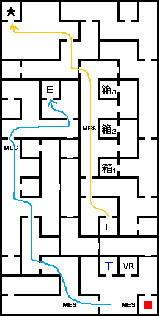
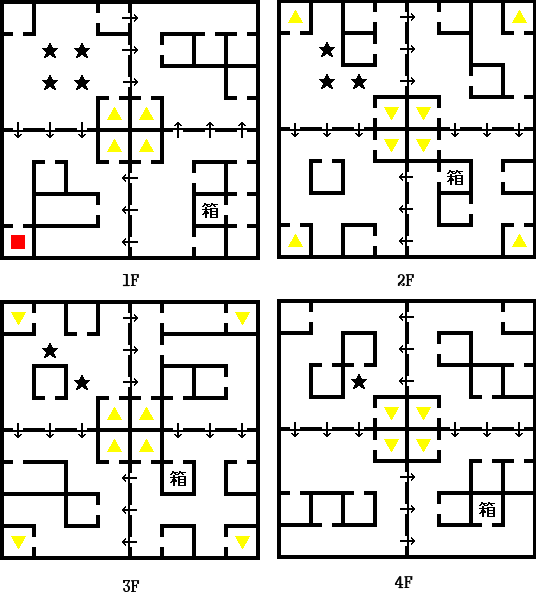
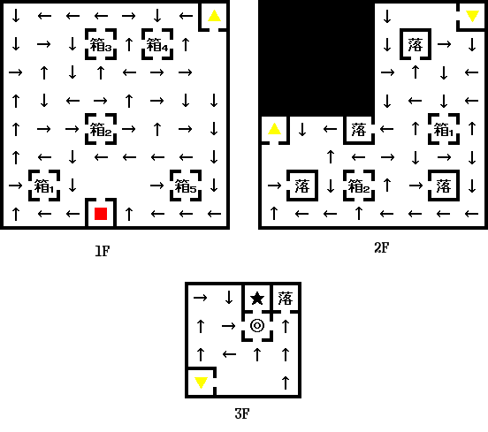
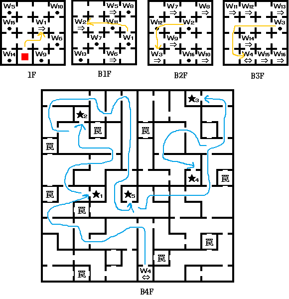

- 旧신주쿠(서)
- 旧신주쿠(동)
- 旧신주쿠(서)
- 旧아카사카
- 旧록본기
- 마사카도의 신체
- 대교회
- 旧이다바시
- 旧코우지마치
- 旧시부야
- 旧오오테마치
- 旧메구로
- 마사카도 부활
- 봉인의 동굴
- 봉인의 동굴(내부)
旧신주쿠(서)
대교회에서 나와 서쪽에 있는 旧신주쿠(서) 내부를 돌아다니다 다레스와 마주친다. 같이 있던 팩이 주인공에게 무엇인가 뿌리려고 하는데 히로코가 대신 맞아준다. 팩은 도망가버리고 히로코는 다레스에게 반해서 ♡~ 다레스는 질색하면서 도망간다. 이때 같이 히로코도 파티에서 이탈한다.
이후 중앙에 있는 '아눈의 약국'을 찾아가서 아눈과 대화 후 북쪽의 계단으로 내려가 B1F의 '요정왕 오베론'을 만나자. 오베론은 주인공에게 해법을 알려준다. 이후 旧신주쿠(동)으로 가자.
게임을 한 번 클리어했었으면 이 근처의 뮤턴트 남자와 대화 후 금강신계에 갈 수 있다. 금강신계의 악마를 쓰러뜨리다보면 최대 경험치인 '65535'를 받을 수 있다. 폭발적인 레벨 업을 경험할 수 있을 것이다. 봉인의 동굴을 클리어한 이후 가보면 더 강력한 악마가 출현한다.
旧신주쿠(동)
지명은 일어로 「旧ヒガシシンジュク」로 표기되어 있다.
여기서 팩을 찾으러 다녀야 된다. 함정에 빠지면 COMP가 사용불가가 된다.
팩을 만나 질문에 NO로 답하면서 팩을 3F 끝까지 몰아 넣으면 다음과 같은 선택지가 나온다.
| 팩에게 10000마카를 줍니까? |
YES → LAW |
| 팩에게 10000마카를 줍니까? |
다음 질문으로 |
| 받습니까? |
YES → 변동 없음 |
| 받습니까? |
NO → CHAOS |
팩에게 「바람기풀의 이슬(浮気草の露)」을 얻을 수 있다.
旧신주쿠(서)
B1F의 '요정왕 오베론'을 만나고, B2F에 있는 히로코와 다레스를 만나면 히로코가 다시 파티로 돌아오고 「아눈♡다레스」가 된다.
이제 1F의 아눈의 약국 뒤쪽으로 가서 다레스&아눈과 대화를 하자. 필라에 대한 정보를 들을 수 있다.
다음 목적지는 旧아카사카. 신주쿠 지하를 통해 다음 지역으로 갈 수 있다.
旧아카사카
旧신쥬쿠 출구에서 남쪽으로 내려가면 旧아카사카가 나온다.
아카사카에 가기 전에 동쪽에 있는 드워프의 일을 도와주면 「토성의 필라(土星のピラー)」를 얻는다.
아카사카는 좋은 장비품을 팔고 있다.
주인공, 최강의 삼신기 (GBA판)를 꼭 보도록 하자.
바에서 코볼트들과 대화하면 마사카도에 대한 정보를 들을 수 있다.
旧록본기로 가는 길은 1F의 동쪽에서 엘레베이터를 타고 내려가면 B4F에 갈 수 있다.(지하에서는 COMP의 사용 불가)
남동쪽 출구로 나오면 旧록본기 방면이 나온다.
B3F에는 CB가 있고, B2F은
마인 출현 포인트가 밀집한 장소가 있다. 여기로 오는 방법은 B4F에서 서쪽 끝의 계단으로 올라가면 된다.
旧록본기

- ★ : 히루코
- 箱1 : 운의 향
- 箱2 : 지혜의 향
- 箱3 : 체력의 향
旧록본기 1F 북서쪽 끝에서 히루코라는 사람을 찾아야 된다. 일단 1F의 엘레베이터를 타고 B2F를 거쳐서 엘레베이터로 B1F으로 가서 합체검 소재인 「연기의 검(練気の剣)」을 얻자.
다시 엘레베이터를 통해 B2F로 간 다음, 남동쪽의 엘레베이터로 올라가히루코와 만난다. 히루코와 대화를 하면 마사카도(将門) 부활 임무를 맡게 되고 각지에 있는 마사카도의 신체를 모두 모아야 한다.
B2F은 「카지노, 무기점, 방어구점, 포츈, 라그의 가게, 가이아 신전, 리페어 가레지, 감정가게」 등이 있다. 특히 록본기 카지노에서는 고급 아이템인 청동의 상자(青銅の箱)를 교환할 수 있다.
히루코를 만난 후에 버추얼 배틀을 하면 STEVEN을 만날 수 있다. 데비다스(デビダス) 기능을 추가 해준다. 데비다스는 세계에 출현하는 악마의 수를 알수 있는 기능이다.
마사카도의 신체
| 부위 |
입수 방법 |
| 몸통 |
旧이다바시의 사당의 「코토시로누시(コトシロヌシ)」의 석화 상태를 풀어주면 입수. |
| 오른팔 |
旧시부야에서 「바포메트(バフォメット)」를 쓰러뜨리고, 「오오나무치(オオナムチ)」를 해방하면 입수 |
| 왼팔 |
旧메구로에서 「사루타히코(サルタヒコ)」 를 쓰러뜨리면 입수 |
| 왼쪽 다리 |
旧코우지마치에서 「오오야마츠미(オオヤマツミ)」를 던전으로부터 꺼내주면 입수 |
| 오른쪽 다리 |
旧오오테마치에서 「스쿠나히코나(スクナヒコナ)」를 던전으로부터 꺼내주면 입수 |
| 머리 |
대교회 3F의 스토커에게 입수 |
대교회
대교회 3F 남동쪽의 방에 있는 스토커에게 '마사카도의 머리'를 얻어야 된다. 대화하면 아래와 같은 선택지가 나온다.
| 마카 20000에 어때? |
YES → LAW |
| 마카 20000에 어때? |
NO → 다음 질문으로 |
| 값을 깍는다.(1) |
변동 없음 |
| 위협한다.(2) |
CHAOS |
| 포기한다(3) |
대화를 끝낸다 |
旧이다바시
머리를 얻은 직후 대교회 엘레베이터를 타고 내려가서 旧신쥬쿠에 가자. 여기의 터미널을 타고 팩토리 또는 홀리 타운으로 간다. 다음은 旧이다바시까지 가는 루트이다.
- 터미널을 타고 팩토리 또는 홀리 타운으로 간다.
- 이 지역에 있는 'XX~센터 통로'를 통해 센터로 간다.
- 센터 지역 북쪽의 '발하라~센터 통로'로 간다.
- 여기에 있는 '발하라 지하통로'를 통해 아래로 내려간다.
- 밖으로 나오면 '旧스이도우바시' 근방으로 나온다.
동쪽의 사당이 바로 '旧이다바시'이다. 여기서 코토시로누시의 석화 상태를 풀어주면 '마사카도의 몸통'을 얻는다. 석화를 풀려면 디스톤(ディストーン)을 소지하고 있으면 된다.
旧코우지마치

- ★ : 오오야마츠미
- 箱(1F) : 코어쉴드
- 箱(2F) : 함정
- 箱(3F) : 체력의 향
- 箱(4F) : 마력의 향
旧아카사카 동쪽에 위치해 있다. 내부에서 '오오야마츠미'를 만나고 데리고 밖으로 나오면 '마사카도의 왼쪽 다리'를 얻는다.
旧시부야

- 箱1(1F) : 함정
- 箱2(1F) : 전망의 종(見渡しの鐘)
- 箱3(1F) : 지혜의 향
- 箱4(1F) : 속도의 향
- 箱5(1F) : 전망의 종
- 箱1(2F) : 힘의 향
- 箱2(2F) : 운의 향
- ★ : 바포메트
旧아카사카 서쪽에 있다. 3F의
BOSS:타천사 바포메트를 쓰러뜨리고 '오오나무치'를 해방하면 '마사카도의 오른팔'을 얻는다.
바포메트는 마력계 마법을 사용한다. 방어구 상성이 '신성방어'나 '반정신'인 방어구를 착용하는 편이 좋다.
旧오오테마치
旧록본기 동쪽에 있다. 전에 '오오야마츠미'를 구출할 때 처럼 '스쿠나히코나'를 찾아서 밖으로 나오면 된다.
旧메구로
旧록본기 서쪽에 있다. 안에 들어가서
BOSS:국진신 사루타히코를 쓰러뜨리면 '마사카도의 왼팔'을 얻는다.
사루타히코(HP1600)는 마하라기온, 한마를 주로 사용한다. 화염과 파마 내성이 있는 중마를 사용하는 것이 좋다. 화염을 반사하고 총, 전격, 긴박에 강하다.
마사카도 부활
사교의 관을 찾아가 마사카도의 신체를 합체 시킨다. 다시 旧록본기의 히루코를 찾아가자. 마사카도의 신체에 영령을 넣어 완전히 부활한다.
이후 봉인의 동굴로 향한다.
봉인의 동굴
旧오오테마치 위쪽에 위치한 봉인의 동굴에 히루코와 마사카도가 있다. 「태양의 필라(太陽のピラー)」와 「이벤트 아이템 : 마사카도의 칼(将門の刀)」을 입수한다.
이제 봉인의 동굴 안에서 천진신의 봉인을 풀어야 한다.
봉인의 동굴(내부)

- ★1 : 츠쿠요미
- ★2 : 타케미카즈치
- ★3 : 타지카라오
- ★4 : 오모이카네
- ★5 : 아마테라스
B4F에서 모든 봉인을 풀고 밖으로 나온다. 이후 홀리 타운에 간다.